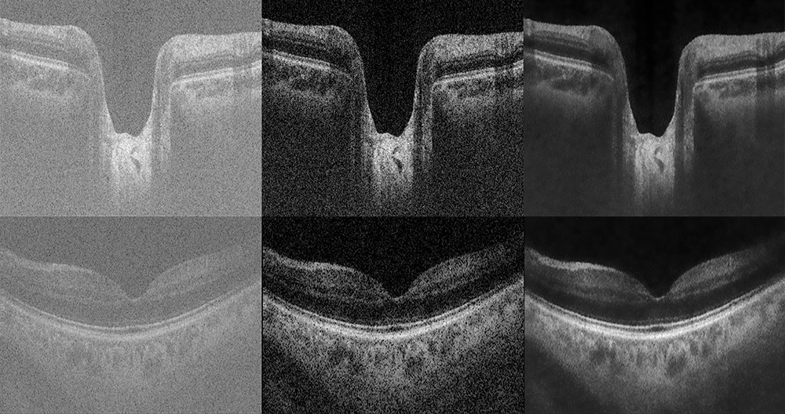

Nantheera Anantrasirichai
The project developed novel image enhancement algorithms for retinal optical coherence tomography (OCT). These images contain a large amount of speckle causing them to be grainy and of very low contrast. To make these images valuable for clinical interpretation, our method offers speckle removal, while preserving useful information contained in each retinal layer starts with multi-scale despeckling based on a dual-tree complex wavelet transform (DT-CWT). The OCT image is further enhanced through a smoothing process that uses a novel adaptive-weighted bilateral filter (AWBF). This offers the desirable property of preserving texture within the OCT image layers. The enhanced OCT image is then segmented to extract inner retinal layers that contain useful information for eye research. Our layer segmentation technique is also performed in DT-CWT domain. Finally we also developed an OCT/fundus image registration algorithm which is helpful when two modalities are used together for diagnosis and for information fusion.
Figure below shows B-scans of retinal OCT images at ONH (top) and macula (bottom). Left: raw OCT images show grainy texture. Middle: despeckled images using with Cauchy Model*. Right: enhanced images using AWBF.

Adaptive-Weighted Bilateral Filtering and Other Pre-processing Techniques for Optical Coherence Tomography. N. Anantrasirichai, L. Nicholson, J. E. Morgan, I. Erchova, K. Mortlock, R. V. North, J. Albon, and Alin Achim. Computerized Medical Imaging and Graphics.
Adaptive-weighted bilateral filtering for Optical Coherence Tomography. N. Anantrasirichai, L. Nicholson, J. E. Morgan, I. Erchova, and Alin Achim. In Proceedings of the IEEE International Conference on Image Processing (ICIP 2013).
Curvelet domain image fusion of OCT and fundus imagery using convolution of meridian distributions. O. Pappas, N. Anantrasirichai, L. Nicholson, J. E. Morgan, I. Erchova, and Alin Achim. In Proceedings of the IEEE International Conference on Image Processing (ICIP 2013).
*A. Achim and E. Kuruoglu, “Image denoising using bivariate alpha- stable distributions in the complex wavelet domain,” Signal Processing Letters, IEEE, no. 1, pp. 17–20, Jan. 2005.
The project analysed texture in the OCT image layers on retinal disease glaucoma. An automated texture classification method for glaucoma detection has been developed. Methodology for classification and feature extraction based on robust principle component analysis of texture descriptors was established. Also, the technique using multi-modal information fusion which incorporates data from visual field measurements with OCT and retinal fundus photography was developed.
SVM-based texture classification in optical coherence tomography. N. Anantrasirichai, Alin Achim, J. E. Morgan, I. Erchova, and L. Nicholson. In Proceedings of the IEEE International Symposium on Biomedical Imaging (ISIB 2013).